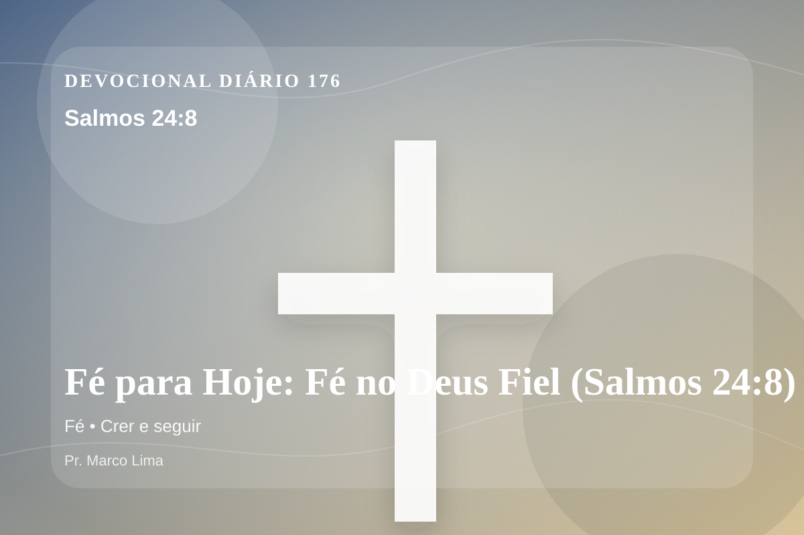

Fé para Hoje: Fé no Deus Fiel (Salmos 24:8)
Quem é o Rei da Glória? O SENHOR forte e poderoso, o SENHOR poderoso na guerra.
Pensamento
Esta meditação olha para a mesma verdade por outro ângulo, buscando obediência concreta e não apenas informação. A leitura de hoje convida você a diminuir o ruído, abrir a Bíblia com humildade e deixar que Salmos 24:8 fale com profundidade.
Salmos 24:8 chama o coração a ouvir Deus com reverência e responder com fé prática. A Palavra não foi dada para enfeitar pensamentos religiosos, mas para conduzir pessoas reais ao Senhor.
O tema de fé precisa ser recebido com simplicidade e seriedade. Quando essa verdade encontra resistência dentro de nós, é justamente ali que o Espírito deseja trabalhar. A fé bíblica não ignora a realidade, mas escolhe interpretar a realidade à luz de Deus. Ela descansa no que o Senhor revelou, mesmo quando os olhos ainda não veem o cumprimento completo da promessa.
A Palavra convida você a abandonar desculpas. Onde houver pecado, confesse; onde houver incredulidade, peça fé; onde houver cansaço, volte-se para Cristo.
Arrependimento não é apenas sentir peso na consciência; é voltar-se para Deus, abandonar o caminho que entristece o Senhor e confiar que a graça de Cristo é suficiente para perdoar e transformar.
Este é o evangelho que sustenta toda aplicação: Jesus Cristo morreu pelos pecadores, ressuscitou em vitória e chama cada pessoa a responder com fé, arrependimento e uma vida rendida ao Seu senhorio.
Deus não chama você para uma religiosidade sem vida, mas para reconciliação com Ele por meio de Cristo. Essa reconciliação começa com fé humilde e arrependimento sincero.
Se o texto trouxe consolo, adore. Se trouxe confronto, arrependa-se. Se trouxe direção, obedeça. Em tudo, volte os olhos para Cristo.
Para Praticar Hoje
- Leia Salmos 24:8 lentamente e destaque uma palavra ou expressão central do texto.
- Confesse a Deus um pecado, resistência ou frieza espiritual que esta Palavra revelou.
- Declare sua fé em Jesus Cristo e pratique hoje uma atitude concreta de arrependimento e obediência.
Oração
Senhor, eu creio, mas aumenta minha fé. Salmos 24:8 me mostra que a fé não ignora a realidade, mas escolhe interpretar tudo à luz de Deus. Fortalece minha confiança. Ensina-me a responder com simplicidade.
{kind=link}